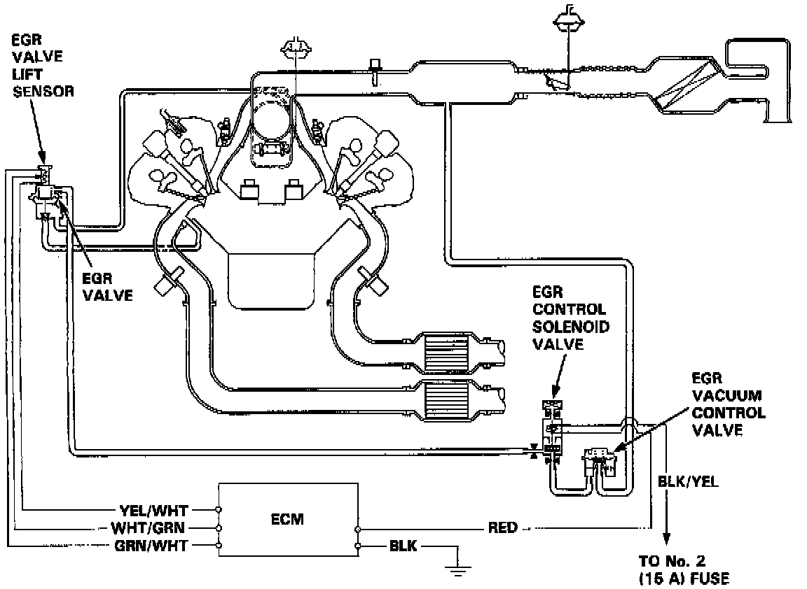

Exhaust Gas Recirculation: Description and Operation

PURPOSE
The exhaust gas recirculation system is designed to reduce oxides of nitrogen emissions (NOx) by recirculating exhaust gas through the exhaust gas recirculation valve and the intake manifold into the combustion chambers. It is composed of the exhaust gas recirculation valve, exhaust gas recirculation vacuum control valve, exhaust gas recirculation control solenoid valve, ECM and various sensors.
OPERATION
The ECM memory contains ideal exhaust gas recirculation valve lifts for varying operating conditions. The exhaust gas recirculation valve lift sensor detects the amount of exhaust gas recirculation valve lift and sends the information to the ECM. The ECM then compares it with the ideal exhaust gas recirculation valve lift which is determined by signals sent from the other sensors. If there is any difference between the two, the ECM varies current to the exhaust gas recirculation control solenoid valve to further regulate vacuum applied to the exhaust gas recirculation valve.